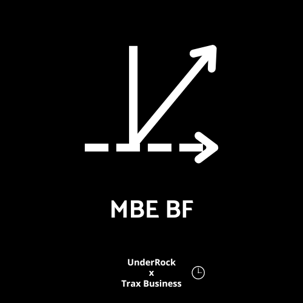

Bienvenue
"La véritable puissance réside dans l'ombre, là où les légendes se taisent et où les esprits s'unissent"

"La véritable puissance réside dans l'ombre, là où les légendes se taisent et où les esprits s'unissent"
Bonjour, je suis
et j'ai 17 ans. Je suis le fondateur d'une entreprise qui vise à éclairer les gens sur le développement du monde et à expliquer comment en tirer le meilleur parti.
Dans la section "Vision" de mon site, vous trouverez plusieurs œuvres enrichissantes que j'ai écrites. Elles contiennent des conseils basés sur mes observations de la vie et mes réflexions sur le monde qui nous entoure.
Si vous découvrez mon entreprise pour la première fois, veuillez noter que ce que vous trouverez dans la version gratuite est limité. Cependant, il est toujours important de tirer le meilleur parti de ce qui vous est offert. Je vous invite donc à visiter la section "Vision" pour en apprendre davantage.
N'hésitez pas à explorer et à profiter au maximum de ces informations précieuses.
Cordialement,
bonne lecture.
La sagesse réside dans l'ouverture de nos yeux sur le monde, la compréhension de son développement et l'exploitation de ses opportunités pour en tirer les meilleurs bénéfices. Chaque observation, chaque réflexion, est une pierre précieuse qui enrichit notre vision du monde et nourrit notre croissance personnelle. Alors, soyons curieux, explorons les horizons qui s'offrent à nous et utilisons avec sagesse les connaissances qui nous sont offertes. Car c'est dans cette quête constante de savoir que se trouve la clé de notre épanouissement et de notre réussite.